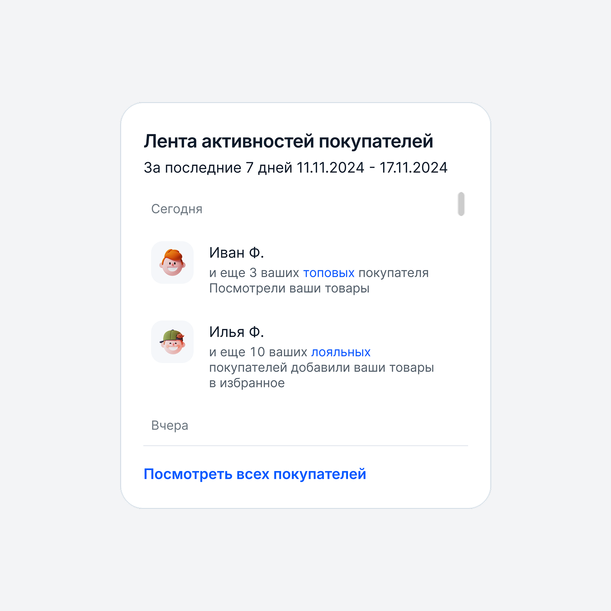
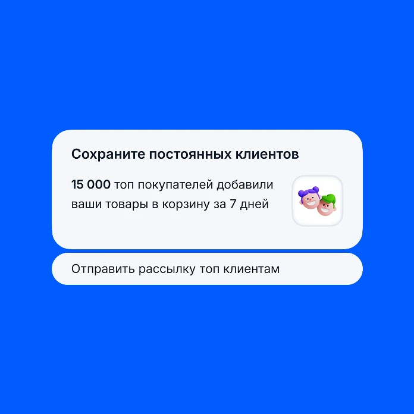
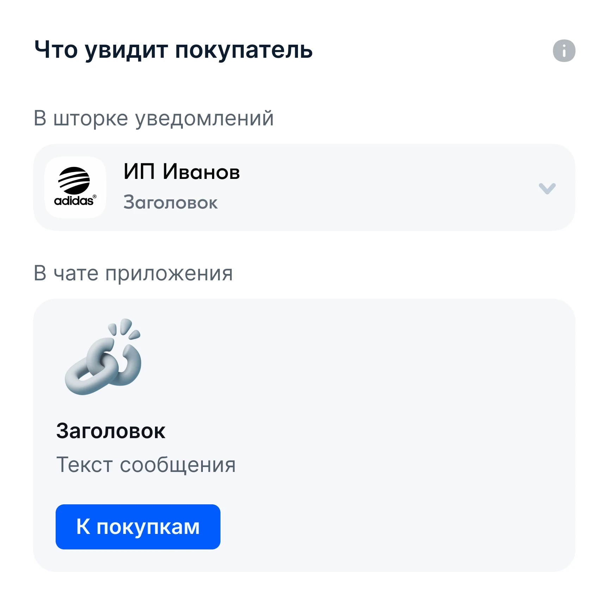
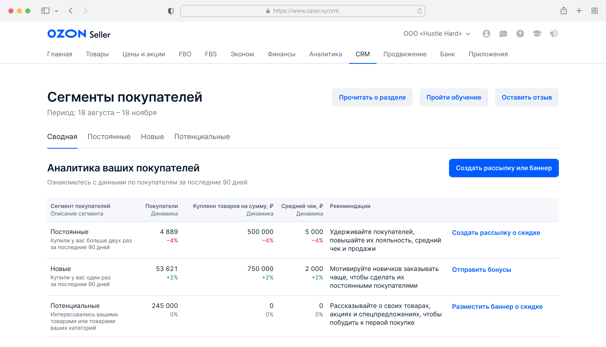
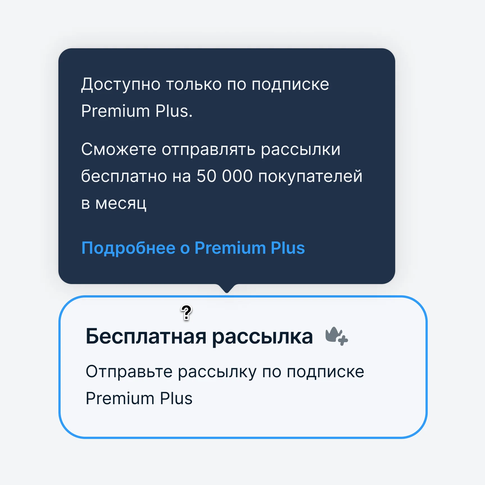
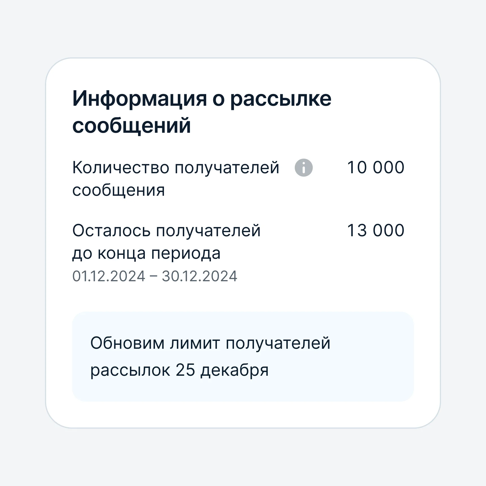
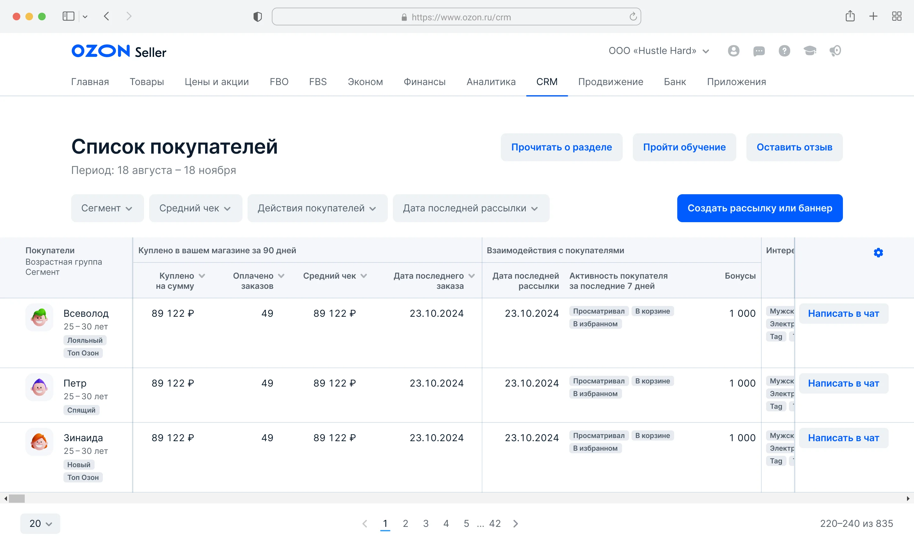
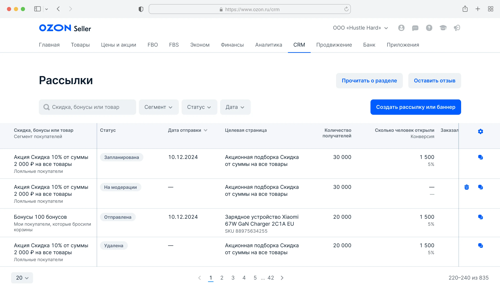
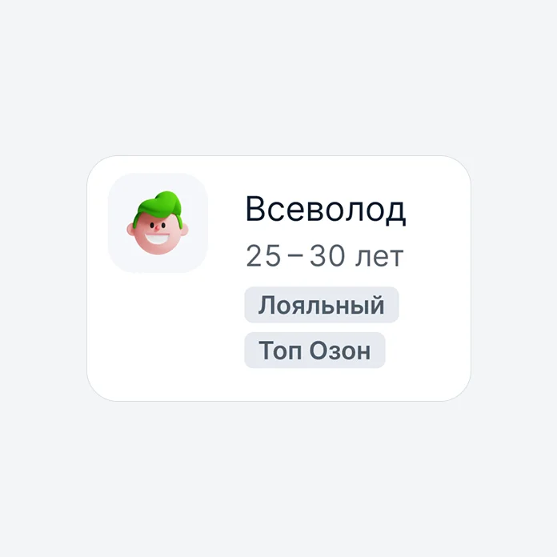

CRM для продавцов Ozon
Проблема: у продавцов были данные о покупателях, но не было понятного способа превратить их в действие
Решение: предложила ключевой сегмент на сводной и пошаговую настройку рассылки: кому отправить, что предложить, как показать

О проекте
Мы создавали «Сегменты покупателей» с нуля как часть CRM Ozon Seller. Задача пришла от SPO: дать продавцам инструмент для работы с покупательской базой
Продавец видит показатели каждой группы и рекомендации действий
Раздел объединяет покупателей в группы по их покупкам и интересу к товарам
В MVP вошли готовые сегменты и подсегменты. Создание собственных сегментов оставили за рамками первого запуска

Проблемы
Обзор и детали
На сводной нужен обзор всей базы, а внутри сегмента детали для работы с конкретной аудиторией
От цифр к действию
Рядом с аналитикой нужны рекомендации: какую задачу решать с группой и какое предложение использовать
Разные продавцы
У одних уже есть постоянные покупатели, у других только первые заказы или интерес к товарам
Концепты
Начали с инвентаризации данных о покупателях: RFM-сегменты, корзина, избранное, просмотры, средний чек, демография, регионы и категории. Для каждого решили, что нужно продавцу здесь, а что он уже смотрит в других разделах кабинета.




Понимание аудитории
Главной задачей интерфейса стало связать данные о покупателях с дальнейшим действием. На сводной видны постоянные, новые и потенциальные покупатели, их показатели и рекомендации по работе с каждой группой.

Я предложила выделять ключевой сегмент и подробнее раскрывать его на сводной. Так у продавца появляется точка старта: он видит аудиторию, которой стоит уделить внимание, и возможные действия рядом с её показателями.
Плюс: у продавца есть точка старта. Минус: остальные сегменты получают меньше внимания.
Почему так: большинство продавцов не знает, с чего начать.
Настройки рекомендации
В CRM можно начать с готового сценария под задачу: удержать постоянных покупателей, мотивировать новых на повторную покупку или расширить аудиторию. Для самостоятельной настройки предусмотрен запуск с нуля.

Чтобы собрать разные механики в понятный процесс, я разделила его на три шага:
Кому отправить
Выбрать аудиторию
Что предложить
Использовать акцию, бонусы или рассказать о товарах
Как показать
Настроить подходящий формат и целевую страницу
Объяснить условия до отправки
За общим сценарием стоят разные ограничения. Обычное сообщение можно отправить не каждой аудитории; у рассылок есть условия подписки и лимит получателей; дата отправки зависит от срока действия акции.


Поддержать работу с отдельным покупателем
Массовую коммуникацию дополняет список покупателей. В нём собраны покупки, недавние действия, интересы и рекомендованные товары. Продавец может отфильтровать аудиторию и перейти к личному общению, если чат доступен.

Для более глубокого анализа группы в CRM встроен существующий портрет покупателя с работой по сегментам. А виджет на главной кабинета показывает недавний интерес покупателей и предлагает действие — так работа с аудиторией может начаться ещё до входа в раздел.
Продолжить работу после отправки
В списке рассылок продавец видит статус, количество получателей, открытия и переходы. Рекомендации помогают решить, повторить удачную коммуникацию или пересмотреть предложение.




Результаты
В результате проектирования получился связный CRM-сценарий: понять аудиторию, выбрать действие, настроить коммуникацию и оценить отклик. Мой основной вклад: концепция ключевого сегмента и пошаговая организация настройки, которые задают понятную последовательность работы с продуктом.
15%
Продавцов используют CRM ежемесячно, в 1,5 раза выше цели
≈1 млн
Покупателей получают сообщения ежедневно, на 25% выше цели
13%
Открываемость сообщений, на 3 п. п. выше цели
Вклад отдельных решений не измеряли